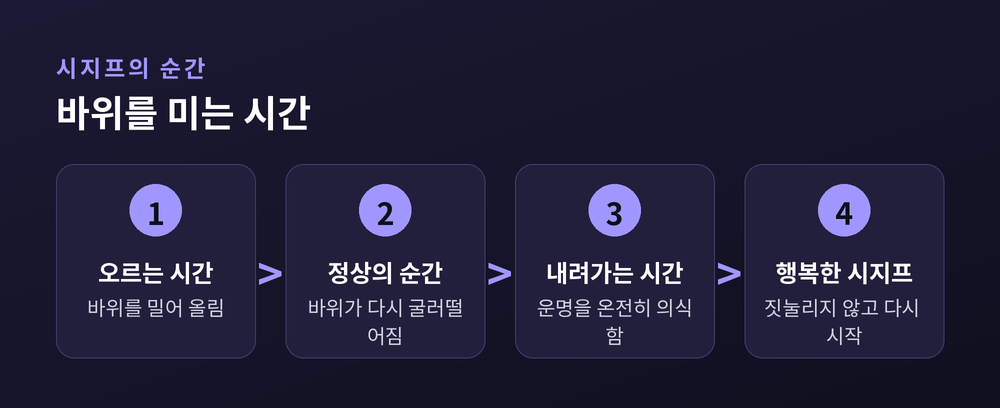

시지프 신화, 그래도 살아야 하는 이유
알베르 카뮈는 「시지프 신화」 서두에서 진정으로 중요한 철학적 문제는 단 하나, 자살이라고 말합니다. 삶이 살아갈 가치가 있는지를 판단하는 일이야말로 철학의 근본 질문이라는 것입니다. 카뮈가 말하는 부조리는 세상 자체의 성질이 아니라, 의미와 질서를 갈구하는 인간의 요구와 침묵하는 세계 사이의 어긋남에서 생겨납니다. 세계는 답을 주지 않는데 인간은 끝없이 이유를 묻습니다. 그 간극이 바로 부조리입니다.
부조리 앞에서 인간이 택할 수 있는 길은 여러 갈래로 갈립니다. 하나는 육체적 자살, 다른 하나는 종교나 초월적 희망에 기대어 부조리 자체를 지워버리는 '철학적 자살'입니다. 카뮈는 두 선택 모두 부조리를 정면으로 마주하지 않고 회피하는 것이라 비판합니다. 그가 제안하는 세 번째 길은 반항입니다. 반항은 부조리를 없애려 하지 않고, 그것을 똑바로 응시한 채 그 긴장 속에서 계속 살아가는 태도입니다.
부조리를 없애는 것이 아니라, 부조리와 함께 사는 것.
시지프는 신들을 기만한 죄로 바위를 산꼭대기로 밀어 올리는 형벌을 받습니다. 정상에 닿는 순간 바위는 다시 굴러떨어지고, 그는 처음부터 다시 밀어 올려야 합니다. 끝없이 반복되는 무의미한 노동, 그것이 인간 조건의 축소판이라고 카뮈는 봅니다. 그런데 카뮈는 여기서 절망 대신 희망적인 결론에 이릅니다. 바위가 굴러떨어진 뒤 다시 산을 내려가는 그 짧은 순간, 시지프는 자신의 운명을 온전히 의식하는 존재가 됩니다. 자신의 처지를 있는 그대로 인정하면서도 그것에 짓눌리지 않는 순간, 시지프는 바위보다 더 강한 존재가 됩니다.
| 선택지 | 태도 | 카뮈의 평가 |
|---|---|---|
| 육체적 자살 | 문제 자체를 끝냄 | 회피 |
| 철학적 자살(초월에 귀의) | 부조리를 지움 | 회피 |
| 반항 | 부조리를 직시하며 지속 | 유일한 길 |
이 책의 마지막 문장은 널리 알려져 있습니다. 시지프가 행복하다고 상상해야 한다는 것입니다. 이는 낙관이 아니라 태도의 선언에 가깝습니다. 의미가 주어지지 않는다고 해서 삶이 살 가치가 없어지는 것은 아니며, 오히려 의미를 기다리지 않고도 순간순간을 온전히 살아내는 데서 자유와 열정이 생겨납니다. 반항하는 인간은 더 이상 미래의 구원을 바라지 않기에, 지금 이 순간의 노동과 감각에 집중할 수 있습니다.

카뮈의 결론은 삶에 미리 정해진 의미가 없다는 사실을 인정하는 데서 출발합니다. 그러나 의미의 부재가 곧 허무의 정당화는 아닙니다. 반항, 자유, 열정이라는 세 가지 태도로 부조리를 껴안을 때, 인간은 주어진 삶을 스스로의 것으로 다시 세울 수 있습니다. 답을 얻지 못해도 계속 묻고, 정상이 무너져도 다시 오르는 것. 그 반복 속에 카뮈가 발견한 것은 절망이 아니라 살아 있다는 사실 자체의 무게였습니다.